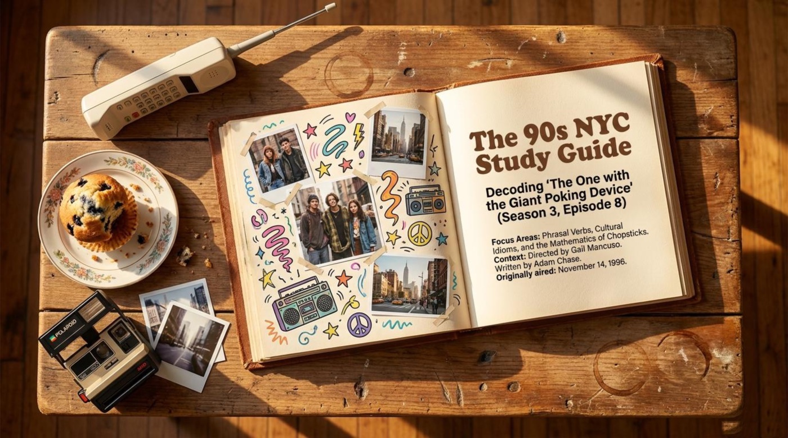
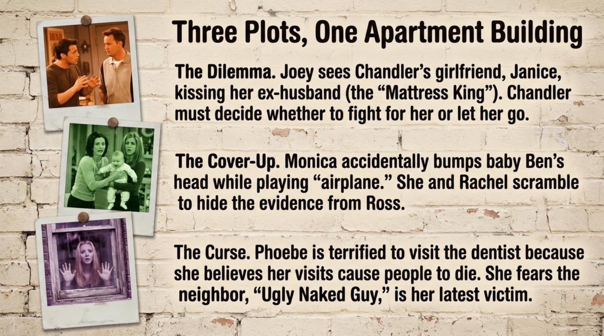
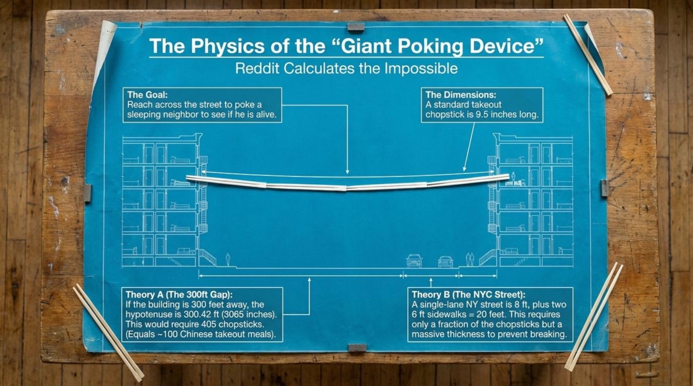
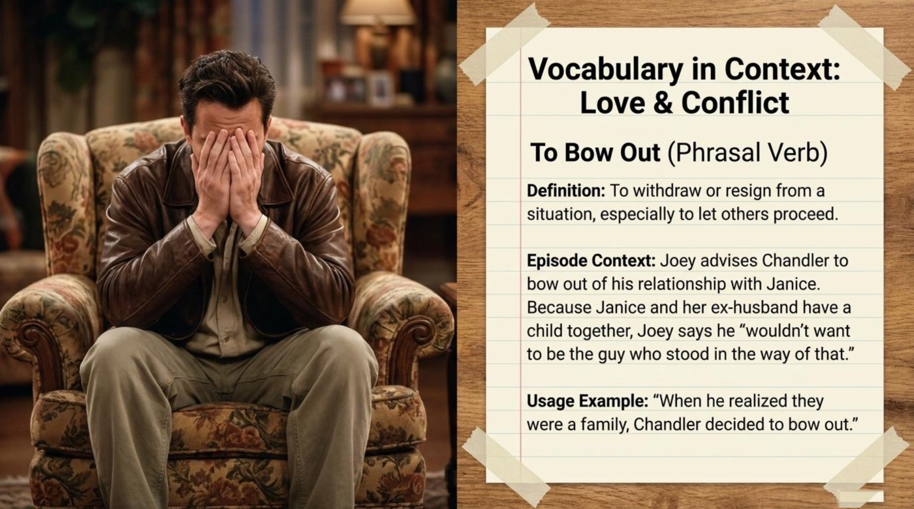
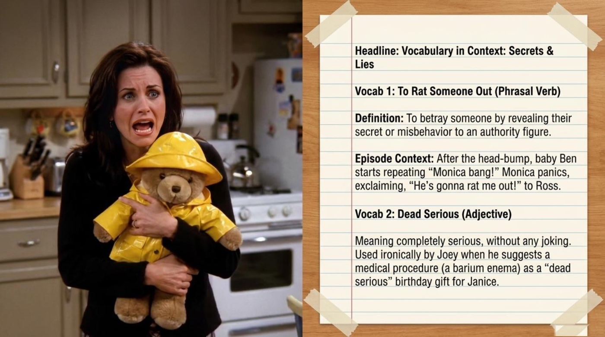
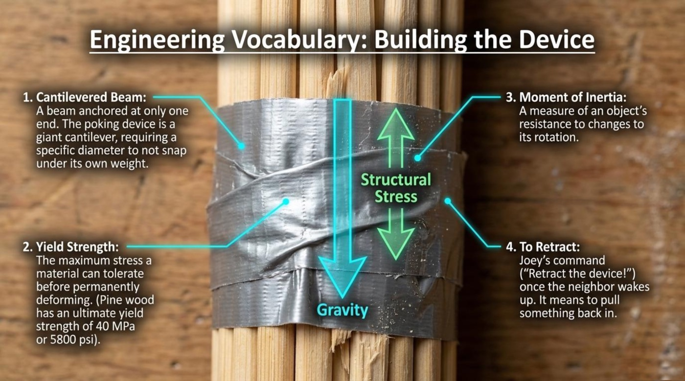
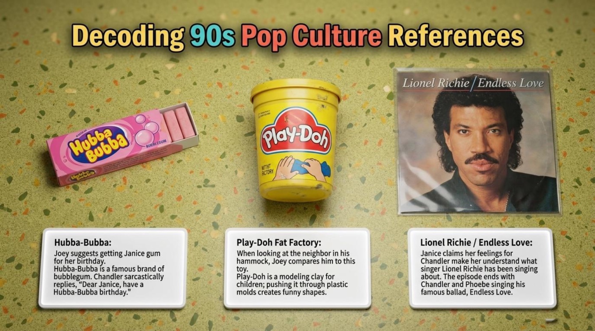
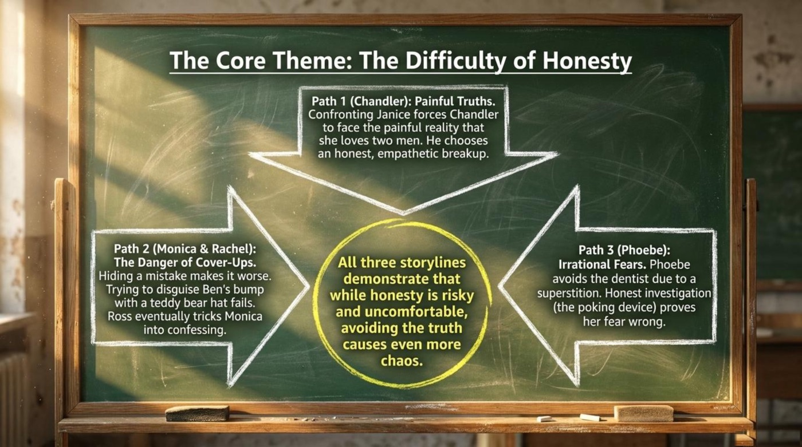
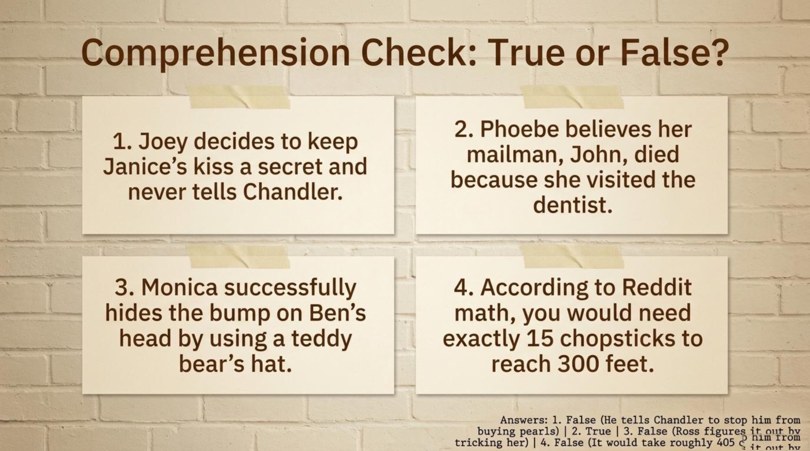
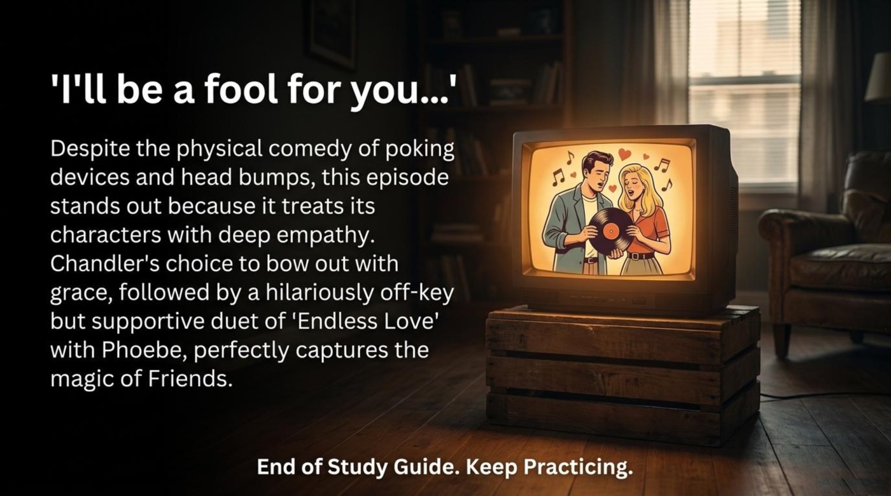

📺 TV-Series English · Friends · Season 3, Episode 8
Chopsticks, Cover-Ups, and “Endless Love”: What Friends Season 3, Episode 8 Teaches You About Honest English
On November 14, 1996, NBC aired an episode of Friends in which six New Yorkers tried to reach a sleeping neighbor across the street using a pole built from taped-together chopsticks. The gadget sounds absurd, and that is exactly the point — the absurd gadget worked, the episode became a classic, and decades later fans on Reddit were still measuring the street, calculating hypotenuses, and counting Chinese takeout meals. A single half hour of television turned out to contain a complete syllabus of living English.
This article unpacks a picture-based lesson built around that episode — The 90s NYC Study Guide: Decoding ‘The One with the Giant Poking Device’ (Season 3, Episode 8). The cover announces its focus areas in one breath: “Phrasal Verbs, Cultural Idioms, and the Mathematics of Chopsticks.” The same cover credits the production team: “Directed by Gail Mancuso. Written by Adam Chase.” In the pages below, the three storylines of the episode become three sets of language tools, the engineering slides become a pocket physics course, and the final slide becomes a challenge — keep practicing. Pay attention to how much language one sitcomsitcom can carry.

📚 1. Content and Context: Three Plots, One Apartment Building
The guide opens with a map of the episode under the heading “Three Plots, One Apartment Building.” Classic Friends episodes braid three storylines together, and this one is no exception — every plot turns out to be a different face of the same theme.
“The Dilemma. Joey sees Chandler’s girlfriend, Janice, kissing her ex-husband (the “Mattress King”). Chandler must decide whether to fight for her or let her go.”
— from the study guide
Notice the cultural shorthand: the Mattress King is the nickname of Janice’s ex-husband, a mattress salesman whose commercials haunt the show. The sentence “Chandler must decide whether to fight for her or let her go” is also a gift for learners — the pattern must decide whether to… or… deserves a permanent place in any notebook about dilemmas.
“The Cover-Up. Monica accidentally bumps baby Ben’s head while playing “airplane.” She and Rachel scramble to hide the evidence from Ross.”
— from the study guide
The phrase scramble to hide the evidence is idiomatic storytelling English in action. A cover-up is born the moment someone chooses protection over honesty, and this storyline shows the full anatomy of one — from the accident, to the disguise, to the collapse.
“The Curse. Phoebe is terrified to visit the dentist because she believes her visits cause people to die. She fears the neighbor, “Ugly Naked Guy,” is her latest victim.”
— from the study guide
The guide calls Phoebe’s belief a superstition — a conviction that one event causes another with no natural connection between them. Her fear is funny precisely because the logic is airtight inside her head and completely empty outside it.
The three plots are a vocabulary engine: the romance plot produces the language of advice, the family plot produces the slang of secrets, and the superstition plot produces the language of storytelling. Three emotional registers, three word fields, one episode.
The most quotable moment of the whole lesson comes from Joey’s advice scene, which the guide records inside its first vocabulary entry: “Joey advises Chandler to bow out of his relationship with Janice. Because Janice and her ex-husband have a child together, Joey says he ‘wouldn’t want to be the guy who stood in the way of that.’” The example shows advanced advice-giving in action: Joey names the obstacle, points to the family involved, and lets the conclusion arrive on its own — no commands, no pressure, just bow out logic spoken aloud.
Then the guide swerves into pure entertainment engineering under the banner “The Physics of the ‘Giant Poking Device’ — Reddit Calculates the Impossible.” The slide defines the mission — “Reach across the street to poke a sleeping neighbor to see if he is alive” — and fixes the key dimension: “A standard takeout chopstick is 9.5 inches long.” From there, arithmetic takes over. “Theory A (The 300ft Gap): If the building is 300 feet away, the hypotenusehypotenuse is 300.42 ft (3065 inches). This would require 405 chopsticks. (Equals ~100 Chinese takeout meals).” Theory B shrinks the problem down to street level: “A single-lane NY street is 8 ft, plus two 6 ft sidewalks = 20 feet. This requires only a fraction of the chopsticks but a massive thickness to prevent breaking.”


Turn any absurd screen moment into a math-and-language drill. Describe the object with precise nouns (a cantilevered beam, a hypotenuse, a gap), attach numbers with units (9.5 inches, 300 feet, 405 chopsticks), and then retell the scene aloud. Numbers force you to use exactly the vocabulary engineers use, and retelling forces the grammar to hold everything together.
Never translate phrasal verbs word by word. Bow out has nothing to do with ribbons, and rat out has nothing to do with animals — the meaning lives in the whole unit, not in its parts.
🧠 2. Vocabulary and Language Takeaways
The vocabulary slides are the heart of the guide. Every entry follows the same smart format — the term, its part of speech, a definition, the episode context, and a usage example — and the terms themselves map perfectly onto the episode’s theme of honesty. The list below keeps that format in plain text, and the flip-card deck that follows turns it into a practice tool.
to bow out phrasal verb
Literal meaning: the little bow a performer takes before leaving the stage.
Figurative meaning: to withdraw or resign from a situation, especially to let others proceed.
Example from the material: Joey advises Chandler to bow out of his relationship with Janice, because Janice and her ex-husband have a child together — Joey says he “wouldn’t want to be the guy who stood in the way of that.”
How the guide explains it: the entry defines the verb as “To withdraw or resign from a situation, especially to let others proceed,” and adds the usage example, “When he realized they were a family, Chandler decided to bow out.”
to rat someone out phrasal verb
Literal meaning: the image of a rat abandoning its companions the moment danger appears.
Figurative meaning: to betray someone by revealing their secret or misbehavior to an authority figure.
Example from the material: after the head-bump, baby Ben starts repeating “Monica bang!” and Monica panics, exclaiming, “He’s gonna rat me out!” — with Ross as the authority figure in question.
How the guide explains it: the slide defines the phrase directly — “To betray someone by revealing their secret or misbehavior to an authority figure” — and anchors it to the exact scene where the toddler becomes a walking confession.
dead serious adjective
Literal meaning: dead works here as an intensifier meaning completely or absolutely.
Figurative meaning: completely serious, without any joking.
Example from the material: Joey uses the phrase ironically when he suggests a medical procedure — a barium enemabarium enema — as a “dead serious” birthday gift for Janice.
How the guide explains it: the slide spells out both the meaning — “completely serious, without any joking” — and the irony: the most ridiculous gift idea in the episode is delivered with a perfectly straight face.
cover-up noun
Literal meaning: a layer or garment placed over something to keep it out of sight.
Figurative meaning: an attempt to hide a mistake or misbehavior from other people.
Example from the material: the storyline is literally titled “The Cover-Up” — Monica and Rachel “scramble to hide the evidence from Ross,” first with a teddy bear’s hat, then with increasingly desperate explanations.
How the guide explains it: the theme slide closes the case: “Hiding a mistake makes it worse. Trying to disguise Ben’s bump with a teddy bear hat fails. Ross eventually tricks Monica into confessing.”
cantilevered beam noun · engineering
Literal meaning: a beam anchored at only one end and hanging free at the other, like a diving board.
Figurative meaning: any structure — or plan — that is supported from one side only and survives by its own stiffness.
Example from the material: the poking device itself, a pole of taped chopsticks that must reach across the street without snapping.
How the guide explains it: “A beam anchored at only one end. The poking device is a giant cantilever, requiring a specific diameter to not snap under its own weight.”
yield strength noun · engineering
Literal meaning: the maximum stress a material can tolerate before it deforms permanently.
Figurative meaning: a person’s breaking point — the load beyond which someone stops springing back.
Example from the material: the slide notes that “Pine wood has an ultimate yield strength of 40 MPa or 5800 psi,” which is exactly why a thin chopstick pole would fail.
How the guide explains it: the term appears in the engineering glossary with the pine-wood figure attached, turning a comedy prop into a real materials-science lesson.
moment of inertia noun · physics
Literal meaning: a measure of an object’s resistance to changes to its rotation.
Figurative meaning: the stubbornness of anything long and thin — poles, opinions, routines — that resists being turned.
Example from the material: one of the four physics terms on the “Engineering Vocabulary: Building the Device” slide, right next to Structural Stress and Gravity.
How the guide explains it: the slide keeps it short and exact: “A measure of an object’s resistance to changes to its rotation.” Remember that moment here means measure, not a point in time.
to retract verb
Literal meaning: to pull something back in, physically.
Figurative meaning: to take back words, claims, or accusations.
Example from the material: Joey’s command — “Retract the device!” — the instant the neighbor wakes up mid-poke.
How the guide explains it: the slide labels it as Joey’s command and defines it plainly: “It means to pull something back in.” The same verb works beautifully in meetings: people retract statements all the time.
💡 90s Pop Culture Decoded
The guide dedicates a full slide to the brand names and references that make the episode sound authentically 1996, and each entry explains both the object and the joke.


Hubba-Bubba — a famous brand of bubblegum. The guide explains that “Joey suggests getting Janice gum for her birthday,” and that “Chandler sarcastically replies, ‘Dear Janice, have a Hubba-Bubba birthday.’” The joke lands because a pack of gum is the cheapest possible gift for a woman he is about to leave — sarcasm with a receipt.
Play-Doh Fat Factory — Play-Doh is a modeling clay for children, and pushing it through plastic molds creates funny shapes. The guide notes that “when looking at the neighbor in his hammock, Joey compares him to this toy.” The brand name becomes a gentle insult, which is exactly how brand names behave in casual English.
Lionel Richie / Endless Love — the guide records that “Janice claims her feelings for Chandler make her understand what singer Lionel Richie has been singing about,” and that “the episode ends with Chandler and Phoebe singing his famous balladballad, Endless Love.” A ballad about endless love becomes the episode’s emotional signature — sung spectacularly out of tune.


🃏 Flip-Card Drill: Eight Terms at Your Fingertips
The eight key terms below work as interactive flip-cards. Click a card — or focus it with the Tab key and press Enter or Space — to turn it over. The back of every card holds the literal meaning, the contextual meaning, an example from the material, and a short note on why the term matters. The Flip all cards button turns the whole deck at once, which makes a perfect self-test right before the quiz.
🔮 3. Deeper Meaning: Metaphors and Symbols
In the middle of the guide, a chalkboard slide zooms out from jokes to meaning under the heading “The Core Theme: The Difficulty of Honesty.” Its center circle carries the thesis in yellow chalk: “All three storylines demonstrate that while honesty is risky and uncomfortable, avoiding the truth causes even more chaos.” Around that circle, three arrows describe three paths — and each path doubles as a symbol that makes the episode memorable for a learner.

🥢 The Giant Poking Device — Investigation Against Fear
The guide’s third path reads: “Path 3 (Phoebe): Irrational Fears. Phoebe avoids the dentist due to a superstition. Honest investigation (the poking device) proves her fear wrong.” The gadget is ridiculous, and its purpose is deadly serious: instead of gossiping about Ugly Naked Guy or inventing explanations, the friends build an instrument and check. The device therefore symbolizes curiosity as an antidote to superstition — and the lesson transfers directly to language learning, where checking the dictionary, the corpus, and the context replaces anxiety with evidence.
🧸 The Teddy Bear’s Hat — The Failure of Cover-Ups
The second path states: “Path 2 (Monica & Rachel): The Danger of Cover-Ups. Hiding a mistake makes it worse. Trying to disguise Ben’s bump with a teddy bear hat fails. Ross eventually tricks Monica into confessing.” A child’s accessory placed over a child’s injury is exactly the right size for the lie. The hat fails because disguises always fail on screen — and usually fail in life — while the trick that finally works is not surveillance but cleverness plus patience. Vocabulary-wise, this symbol pits two phrasal verbs against each other: to cover up versus to rat out.
📐 The 405 Chopsticks — The Mathematics of Caring
The physics slide honors a fan’s genuine calculation: “If the building is 300 feet away, the hypotenuse is 300.42 ft (3065 inches). This would require 405 chopsticks. (Equals ~100 Chinese takeout meals).” The subtitle — “Reddit Calculates the Impossible” — celebrates the moment when fiction inspires real geometry. The number 405 matters because someone on the internet honestly ran the numbers for a joke, and the study guide considered the effort worth a full slide. Fiction that provokes real calculation is fiction doing educational work, and the guide’s focus area — the Mathematics of Chopsticks — is that idea made visible.
🎤 “Endless Love” — Grace After Honesty
The first path belongs to Chandler: “Path 1 (Chandler): Painful Truths. Confronting Janice forces Chandler to face the painful reality that she loves two men. He chooses an honest, empathetic breakup.” The closing slide completes the picture: “Chandler’s choice to bow out with grace, followed by a hilariously off-key but supportive duet of ‘Endless Love’ with Phoebe, perfectly captures the magic of Friends.” The duet symbolizes empathy in action: honesty without empathy is cruelty, empathy without honesty is theater, and the episode insists on both at once.
🎯 4. Comprehension Check
The guide closes with a four-statement true-or-false drill, and this article expands it into a full interactive quiz — comprehension checks, vocabulary in context, true-or-false items, and a fill-in-the-blank challenge, all drawn from the material above. Choose an answer and the page responds instantly: correct choices light up green, mistakes shake red, a short explanation appears under every question, and the score counter with its row of dots keeps a running record. A perfect run earns special praise from the result panel.
Final result
The guide’s own answer key confirms the trickiest facts: Joey tells Chandler about the kiss to stop him from buying pearls, Ross figures out Monica’s secret by tricking her, and the chopstick bridge would take roughly 405 sticks rather than 15.
🌅 Conclusion: Keep Practicing
The final slide of the guide opens with a lyric — “I’ll be a fool for you…” — and closes with a paragraph that deserves to be quoted in full: “Despite the physical comedy of poking devices and head bumps, this episode stands out because it treats its characters with deep empathy. Chandler’s choice to bow out with grace, followed by a hilariously off-key but supportive duet of ‘Endless Love’ with Phoebe, perfectly captures the magic of Friends.”


The takeaway for learners sits on the very last line of the material: “End of Study Guide. Keep Practicing.” Six words, one imperative, and a whole philosophy — language arrives through repetition, context, and a little laughter. Replay the quiz until every dot turns green, reopen the lesson files before the phrases fade, and then take the vocabulary into the wild: dead serious practice, graceful exits, and never — under any circumstances — ratting out a friend. 💛